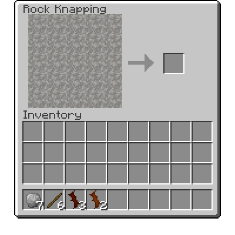

Introdução
Introdução
Em Terrafirmacraft, as primeiras coisas que você pode obter são gravetos, galhos e pedras soltas. Eles podem ser encontrados em quase todos os clima, deitados no chão. Clique Direito ou quebre isso para buscá-los.
Example
Multibloco
Um punhado de gravetos comuns e pedras.
Além de reunir gravetos e galhos no chão, os gravetos também podem ser obtidos quebrando folhas com o punho. Depois de ter várias pedras e gravetos, você está pronto para começar Knapping. Knapping é um processo em que duas rochas são atingidas juntas, para formar uma forma específica. Para remar, primeiro segure pelo menos duas rochas na sua mão, depois clique com o botão direito do mouse no ar, o que abrirá o Knapping Interface.
A Knapping Interface.
Para remar um item específico, você deseja remover quadrados até formar o padrão desejado. Por exemplo, crie uma lâmina de faca combinando a receita mostrada à direita.
Como as receitas de criação, a localização do padrão desejado não importa para a saída, e algumas receitas têm várias variantes que são válidas.
Todas as cabeças da ferramenta de pedra podem ser criadas com um bastão ou galho para montá -las em uma ferramenta.
A faca de pedra pode ser usada para colher Straw quebrando plantas.